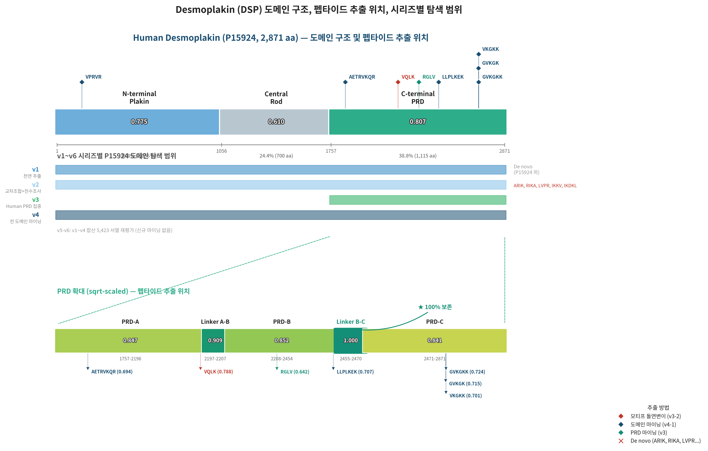
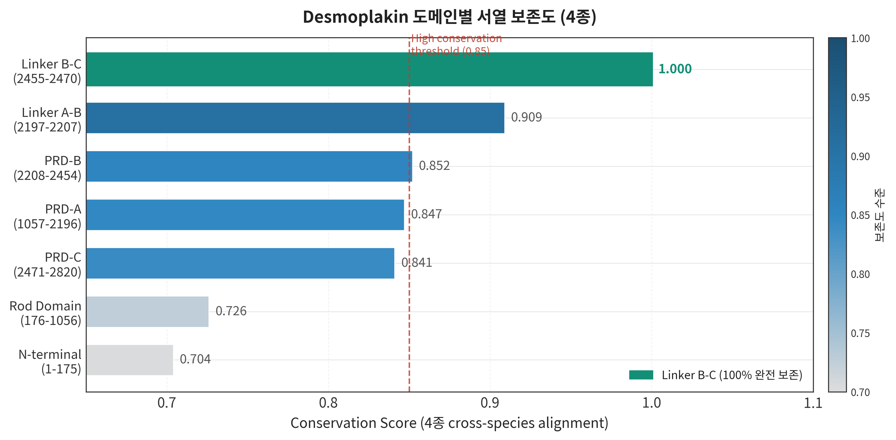
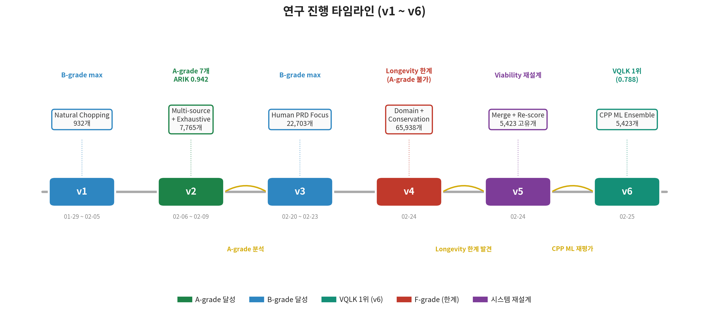
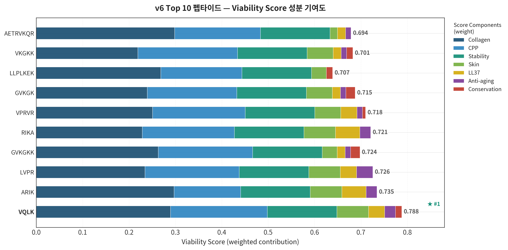
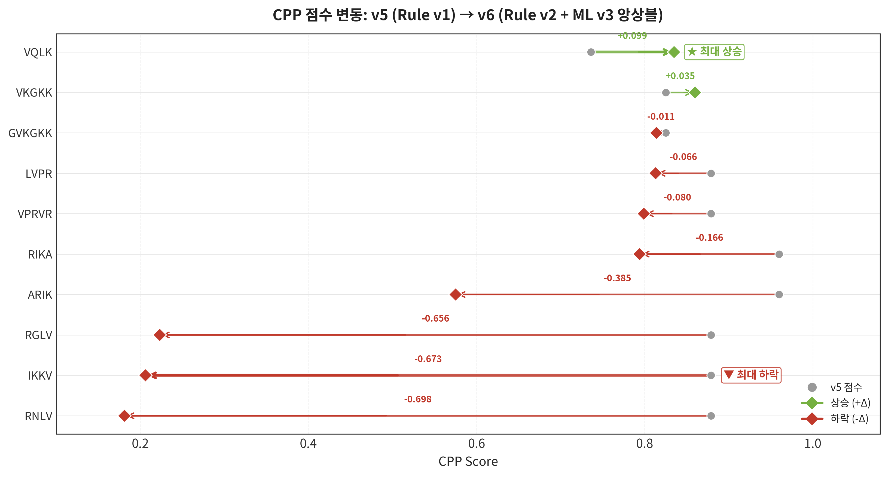
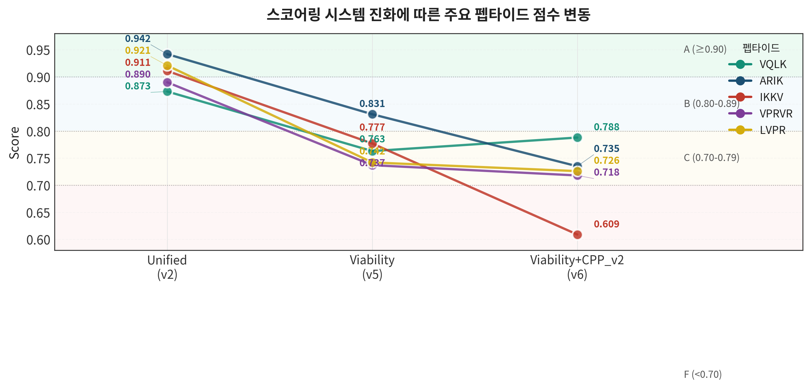

본 연구는 Podarcis muralis 및 근연종 3종(Anolis carolinensis, Podarcis lilfordi)의 Desmoplakin homolog 10종과 Human Desmoplakin(P15924)에서 화장품 활성 펩타이드를 AI 기반으로 탐색하였다.
총 6개 연구 버전(v1~v6), 23개 세부 Phase를 거쳐:
최종(v6) 기준 최고 점수 펩타이드는 **VQLK**(Viability **0.788**, C-grade)이며, Collagen Activity 0.965와 ML CPP 0.999를 동시 달성하였다. 이전 1위 ARIK(0.735, C-grade)는 ML CPP 모델이 보수적으로 재평가하여 하향 조정되었다. 본 보고서는 in silico 평가 결과를 종합하여 합성 우선순위 펩타이드와 향후 in vitro 검증 방향을 제안한다.
| 컴포넌트 | 가중치 | 평가 방법 | 의미 |
|---|---|---|---|
| Collagen Activity | 0.30 | FusPBESM2 v4 (fine-tuned, AUC-ROC 0.9555) | 콜라겐 생성 촉진 예측 |
| CPP Ensemble | 0.25 | Rule v2(35%) + ML v3(65%) | 세포 투과력 (ML + Rule 앙상블) |
| Stability | 0.15 | Instability Index < 40 → 1.0 | 안정성 (binary) |
| Skin Penetration | 0.08 | MW, GRAVY, charge, length 복합 | 피부 투과력 |
| LL37 Similarity | 0.07 | Sliding window substring match | 항균 펩타이드 유사성 |
| Anti-aging Sim | 0.07 | GHK/KTTKS/RGD 등 reference match | 기존 활성 펩타이드 유사도 |
| Conservation | 0.08 | 4종 MSA 기반 position score | 진화적 보존도 |
**Grade 기준**: A ≥ 0.90 | B ≥ 0.80 | C ≥ 0.70 | F < 0.70
**스코어링 진화**: Unified(v1~v3, 5-comp) → Longevity(v4, 7-comp, 천장 문제 발견) → Viability(v5, 7-comp 재설계) → Viability+CPP_v2(v6, CPP를 ML 앙상블로 교체). 자세한 수식은 Appendix A 참조.
Podarcis muralis는 꼬리 autotomy 후 완전한 재생을 보이는 파충류로, 이 과정에서 Desmosome remodeling이 핵심 역할을 한다 (Alibardi, 2020 [11]). Desmoplakin은 desmosome의 핵심 구성 단백질로, 중간섬유(intermediate filament)를 세포막에 고정하며, 피부 상피 조직의 구조적 완전성을 유지한다. 본 연구는 이 종 및 근연종의 Desmoplakin에서 화장품 활성 펩타이드를 발굴하여, 인간 피부 재생에 활용하는 것을 목표로 한다.
**Table 1: 연구 대상 단백질 (전체 Desmoplakin)**
| # | UniProt ID | 단백질명 | 생물종 | 길이(aa) | 연구 단계 |
|---|---|---|---|---|---|
| 1 | P15924 | Desmoplakin | Homo sapiens | 2,871 | v1~v6 (reference) |
| 2 | H9G6P9 | Desmoplakin | Anolis carolinensis | 2,879 | v1/v2 |
| 3 | A0A803TX40 | Desmoplakin | Anolis carolinensis | 2,648 | v1/v2 |
| 4 | A0A803TZQ2 | Desmoplakin | Anolis carolinensis | 2,681 | v1/v2 |
| 5 | A0A803SVN3 | Desmoplakin | Anolis carolinensis | 2,723 | v1/v2 |
| 6 | A0AA35KM67 | Desmoplakin | Podarcis lilfordi | 2,198 | v2 |
| 7 | A0AA35KMJ7 | Desmoplakin | Podarcis lilfordi | 2,277 | v2 |
| 8 | A0AA35KKW6 | Desmoplakin | Podarcis lilfordi | 2,847 | v2 |
| 9 | A0A670I745 | Desmoplakin | Podarcis muralis | 2,797 | v2 |
| 10 | A0A670I7E6 | Desmoplakin | Podarcis muralis | 2,768 | v2 |
**Source 약어**: P15924=Human, H9G6P9/A0A803TX40/TZQ2/SVN3=A.car, A0AA35KM67/KMJ7/KKW6=P.lil, A0A670I745/I7E6=P.mur
| 도메인 | 위치 (aa) | 비율 | Conservation | 특징 |
|---|---|---|---|---|
| N-terminal plakin | 1-1,056 | 36.8% | 0.775 | 세포 접착 |
| Central rod | 1,057-1,756 | 24.4% | 0.610 | 이합체화 |
| C-terminal PRD | 1,757-2,871 | 38.8% | **0.807** | 케라틴 고정, **활성 펩타이드 핫스팟** |
**Conservation Score 정의**: 4종(Human, *A. carolinensis*, *P. lilfordi*, *P. muralis*)의 Desmoplakin 서열을 다중 정렬(MSA) 후, 도메인 내 각 아미노산 위치에서 **종간 일치율의 평균**을 산출한 값(0~1).
- **1.000** = 4종 모든 위치에서 아미노산이 **완전히 동일** (예: Linker B-C, 16 aa — 3억 년+ 종분화에도 변화 없음)
- **0.807** = 약 81%의 위치에서 동일 또는 유사 (예: C-terminal PRD, 1,115 aa)
- **0.610** = 약 61%만 보존 — 상대적으로 진화적 변동이 큰 영역 (예: Central Rod)
- **해석**: 높은 보존도 = 기능적으로 필수적인 서열. 보존된 영역에서 추출된 펩타이드는 종간 기능이 유지될 가능성이 높으며, 생물학적 활성의 진화적 근거를 제공함.

PRD 세부 도메인 conservation hotspot:

v1~v6에 걸쳐 사용된 8가지 접근법:
| # | 방법 | 설명 | 적용 | 마케팅 가치 |
|---|---|---|---|---|
| 1 | **천연 추출** (Natural Chopping) | 단백질 서열에서 k-mer 직접 절단 | v1, v3 | "천연 유래 펩타이드" |
| 2 | **교차 조합** (Cross-Source) | 복수 단백질 motif 교차 조합 | v2-3/4 | "분자 설계 펩타이드" |
| 3 | **모티프 점돌연변이** (Motif Mutation) | 고활성 모티프 단일 AA 치환 | v2-7, v3-2 | "AI 최적화 펩타이드" |
| 4 | **전수 조사** (Exhaustive Search) | 4-mer 전체 조합 (160K) | v2-8 | "과학적 완전 탐색" |
| 5 | **Human PRD 집중 마이닝** | P15924 C-terminal PRD 세분화 | v3, v4 | "Human-derived" |
| 6 | **도메인 기반 마이닝** | 11 sub-domain별 conservation + collagen | v4 | 진화적 근거 |
| 7 | **Viability 재평가 + 구조 검증** | 전체 재스코어링 + structural gate | v5 | ML 검증 기반 |
| 8 | **CPP ML Ensemble 재평가** | ML CPP Head + Rule v2 + ensemble | v6 | ML 학습 기반 CPP |
| 모델/도구 | 용도 | 성능 | 적용 범위 |
|---|---|---|---|
| FusPBESM2 Collagen v4 | Collagen activity 예측 | AUC-ROC 0.9555 (외부 벤치마크 32개) | **v1~v6 전 과정** |
| FusPBESM2 CPP v3 | CPP activity 예측 | val AUC 0.9606, test 0.9349 | **v6** |
| CPP Rule v2 | CPP 6-component 휴리스틱 | 개선된 rule (R/K 분화, amphipathicity) | v6 (ensemble 35%) |
| ESMFold | 구조 예측 (≥10aa) | pLDDT 기반 structural gate | v5 |
| Biopython ProtParam | Instability Index, MW, GRAVY | 공인 방법 | v1+ |
| 단계 | 전략 | Score 체계 | 주요 성과 |
|---|---|---|---|
| **v1** | 파충류 DSP chopping (5-mer) | Unified (5-comp) | B-grade 7개, 최고 IKDKL 0.8698 |
| **v2** (9 Phase) | 교차조합·모티프돌연변이·**160K 전수조사** | Unified (5-comp) | **A-grade 3개! ARIK 0.9420** |
| **v3** (4 Phase) | Human DSP PRD 집중 마이닝 | Unified (5-comp) | 941 B-grade, RGLV 0.8909 |
| **v4** (4 Phase) | 도메인 기반 conservation 분석 | Longevity (7-comp) | 천장 0.894 → A-grade 수학적 불가 |
| **v5** (4 Phase) | **전 버전 합산 → 중복 제거 → 5,423 고유 서열** | **Viability** (7-comp 재설계) | Viability 0.831, 구조 검증 |
| **v6** (1 Phase) | **ML CPP Ensemble 재평가** (동일 5,423 서열) | **Viability+CPP_v2** | **VQLK 1위 부상, B-grade 0개** |
**핵심**: v1~v4는 각각 독립적으로 펩타이드를 마이닝. **v5에서 전 버전 출력을 합산하고 서열 기준 중복을 제거**하여 5,423개 고유 서열을 확보. v6은 동일 5,423개에 대해 CPP component만 ML 앙상블로 교체하여 재평가.
**연구 시리즈 간 피드백**: v1 결과 → v2 확장 전략 → v2 A-grade 달성 → v3 Human DSP 집중 → v4 도메인/Longevity 시도 → Longevity 천장 발견 → v5 Viability 재설계 + ML 리뷰 반영 → v6 CPP ML 적용. **반복적 개선(iterative refinement)** 구조.

| 지표 | v1 | v2 | v3 | v4 | v5 (재평가) | v6 (CPP ML) |
|---|---|---|---|---|---|---|
| 해당 버전 마이닝 수 | 932 | 7,765 | 22,703 | 65,938 | — | — |
| **누적 고유 서열** | 932 | ~8,500 | ~30,000 | ~97,000 | **5,423** | **5,423** |
| A-grade | 0 | **7** | 0 | 0 | 0 | 0 |
| B-grade | 7 | 1,724 | 941 | 0 | 1 | **0** |
| C-grade | -- | -- | -- | -- | 28 | **9** |
| 최고 점수 | 0.8698 | **0.9424** | 0.8909 | 0.7237 | 0.8308 | **0.788** |
| 최고 펩타이드 | IKDKL | **ARIK** | RGLV | GKFGKK | ARIK | **VQLK** |
| Score 체계 | Unified | Unified | Unified | Longevity | Viability | Viability+CPP_v2 |
| CPP 평가 방법 | Rule v1 | Rule v1 | Rule v1 | Rule v1 | Rule v1 | **Ensemble** |
**펩타이드 카운트 해설**:
- **v1~v4 (Discovery)**: 각 버전이 독립적으로 마이닝. 동일 서열이 중복 존재 가능.
- **v5 (Merge & Re-evaluate)**: v1+v2+v3+v4 전체 출력을 **합산 후 서열 기준 중복 제거** → **5,423개 고유 서열**. 동일 서열이 여러 버전에 있으면 최고 점수 인스턴스만 유지.
- **v6 (CPP Re-score)**: v5와 동일 5,423개, CPP component만 Ensemble로 재평가.
- **v4→v5 감소**: v4 단독 65,938개이나, v5에서 v4 Phase 2 출력(~5,400개)만 로드. 전 버전 합산 → 중복 제거 후 5,423개.
도메인 배경색: PRD-A PRD-B PRD-C N-term De novo LL37 유래
| # | Sequence | Via(v6) | Grade | CPP_ens | ML_v3 | Col | 도메인 (P15924 위치) | Source |
|---|---|---|---|---|---|---|---|---|
| 1 | VQLK | 0.788 | C | 0.835 | 0.999 | 0.965 | 🟢 PRD-A (2184) | v3-2 모티프 돌연변이 |
| 2 | ARIK | 0.735 | C | 0.575 | 0.531 | 0.990 | 🟠 P15924 외 (de novo) | v2-8 전수조사 |
| 3 | LVPR | 0.726 | C | 0.813 | 0.978 | 0.781 | 🟣 LL37 유래 (pos 33-36) | v3-2 모티프 돌연변이 |
| 4 | GVKGKK | 0.724 | C | 0.814 | 0.961 | 0.877 | 🔵 PRD-C (2700) | v4-1 도메인 마이닝 |
| 5 | RIKA | 0.721 | C | 0.794 | 0.869 | 0.762 | 🟠 P15924 외 (de novo) | v2-8 전수조사 |
| 6 | VPRVR | 0.718 | C | 0.799 | 0.880 | 0.836 | 🟡 N-terminal (158) | v4-1 도메인 마이닝 |
| 7 | GVKGK | 0.715 | C | 0.772 | 0.900 | 0.798 | 🔵 PRD-C (2700) | v4-1 도메인 마이닝 |
| 8 | LLPLKEK | 0.707 | C | 0.700 | 0.810 | 0.895 | 🌊 PRD-B (2443) | v4-1 도메인 마이닝 |
| 9 | VKGKK | 0.701 | C | 0.860 | 0.999 | 0.730 | 🔵 PRD-C (2701) | v4-1 도메인 마이닝 |
| 10 | AETRVKQR | 0.694 | F | 0.740 | 0.822 | 0.995 | 🟢 PRD-A (1845) | v4-1 도메인 마이닝 |
**추출 방법론별 상세 랭킹**은 [Appendix C](#appendix-c-추출-방법론별-v6-랭킹)에 수록. 전체 5,423개 펩타이드 데이터는 첨부 CSV(`v6_phase0_cpp_reeval.csv`, `peptides_all_ranking.csv`) 참조.

| Peptide | 도메인 (위치) | CPP(v5) | CPP(v6) | Δ | Via(v5) | Via(v6) | Δ | Grade 변화 | 원인 |
|---|---|---|---|---|---|---|---|---|---|
| **VQLK** | PRD-A (2184) | 0.736 | 0.835 | **+0.10** | 0.763 | **0.788** | +0.03 | C→C | ML이 V-Q-L-K amphipathic 높게 평가 |
| **ARIK** | De novo | 0.960 | 0.575 | **-0.39** | 0.831 | 0.735 | -0.10 | **B→C** | Rule v2 4-mer penalty + ML OOD |
| IKKV | De novo | 0.879 | 0.206 | **-0.67** | 0.777 | 0.609 | -0.17 | **C→F** | ML이 0.004로 non-CPP 판정 |
| VPRVR | N-term (158) | 0.879 | 0.799 | -0.08 | 0.737 | 0.718 | -0.02 | C→C | 안정 유지 (ML 0.880) |
| LVPR | LL37 유래 | 0.879 | 0.813 | -0.07 | 0.742 | 0.726 | -0.02 | C→C | ML 0.978로 높게 평가 |
| VKGKK | PRD-C (2701) | 0.825 | 0.860 | +0.04 | 0.692 | 0.701 | +0.01 | **F→C** | ML 0.999, 유일한 상향 |
CPP delta 평균: **-0.3600** (대폭 하락). ML CPP v3이 Rule v1 대비 훨씬 보수적이고 현실적인 평가를 수행.

32개 외부 벤치마크 펩타이드(13 positive + 19 negative)로 Collagen ML 모델을 검증:
| Peptide | Expected | v4 Score | 판정 |
|---|---|---|---|
| GHK | Positive | 0.5527 | OK |
| KTTKS | Positive | **0.2872** | **NG (Known limitation)** |
| GQPR | Positive | 0.8279 | OK |
| GPP×3 | Positive | 0.9716 | OK |
| ARIK | Positive | 0.9901 | OK |
**Known Limitation**: KTTKS(Matrixyl)는 matrikine promoter로 collagen을 직접 생성하지 않고 TGF-beta 경로를 통해 간접 촉진. v4 모델은 "collagen fragment" 탐지기로서 유효하나, matrikine 메커니즘은 포착하지 못함.
| 펩타이드 | Unified (v2) | Viability (v5) | Viability+CPP_v2 (v6) |
|---|---|---|---|
| **VQLK** | 0.8725 (B) | 0.7632 (C) | **0.788 (C)** |
| **ARIK** | **0.9424 (A)** | **0.8308 (B)** | 0.735 (C) |
| IKKV | 0.9113 (A) | 0.7770 (C) | **0.609 (F)** |
| VPRVR | 0.8897 (B) | 0.7374 (C) | 0.718 (C) |
| LVPR | 0.9208 (A) | 0.7420 (C) | 0.726 (C) |
3개 시스템에서 일관되게 높은 점수를 받은 펩타이드는 **VQLK**와 **VPRVR**뿐. ARIK는 Unified A-grade → v6 C-grade로 2단계 하락.

VQLK(V-Q-L-K)는 ML CPP에서 **0.999**라는 극도로 높은 점수를 받았다:
이 결과는 CPP 활성에서 단순 양전하(R/K) 비율보다 **amphipathic 배열**이 더 중요한 결정 요인임을 시사한다 (Guidotti et al., 2017 [6]).
ARIK(A-R-I-K)는 v1~v5에서 최고 점수를 유지했으나, v6에서 CPP가 0.960 → 0.575로 급락:
4-mer CPP의 실험적 검증이 필요하며, FITC 표지 세포 투과 실험으로 in silico 예측을 확인해야 한다.
이 3개 펩타이드는 ML CPP v3에서 0.004~0.017 점수를 받았다:
Rule v1에서는 R/K 비율만으로 일괄 0.879를 부여했으나, ML은 실제 CPP 데이터베이스(5,349 seq)에서 이런 서열이 CPP로 분류되지 않음을 학습하였다.
v6의 ML 결과는 최적 길이를 재고하게 한다:
v3에서 22,703개 Human DSP 유래 펩타이드를 탐색했으나 A-grade 0개:
| 전략 | 대표 펩타이드 | 도메인 (위치) | 포지셔닝 | 규제 |
|---|---|---|---|---|
| 🟢 천연 유래 | GVKGKK(6AA) | PRD-C (2700) | "Human Desmoplakin 유래 천연 펩타이드" | 규제 유리 |
| 🟡 AI 최적화 | VQLK(4AA) | PRD-A (2184) | "AI가 발견한 amphipathic CPP" | 혁신 마케팅 |
| 🟠 과학적 완전 탐색 | ARIK(4AA) | De novo (P15924 외) | "160,000 조합 중 최적 collagen 활성" | 데이터 기반 |
| 🔵 LL37 유래 | LVPR(4AA) | LL37 (pos 33-36) | "인체 항균 펩타이드 LL37 기반" | 바이오마커 스토리 |
과학적 근거 + 마케팅 전략 + 3개 스코어링 시스템 교차 검증을 모두 고려:
| # | Sequence | Unified | Via(v5) | Via(v6) | Col | CPP_ens | 도메인 (위치) | 선별 근거 |
|---|---|---|---|---|---|---|---|---|
| 1 | VQLK | 0.873(B) | 0.763(C) | 0.788(C) | 0.965 | 0.835 | 🟢 PRD-A (2184) | 3시스템 상위, v6 #1, ML CPP 0.999 |
| 2 | ARIK | 0.942(A) | 0.831(B) | 0.735(C) | 0.990 | 0.575 | 🟠 De novo | Collagen 전체 1위, Unified A-grade |
| 3 | VPRVR | 0.890(B) | 0.737(C) | 0.718(C) | 0.836 | 0.799 | 🟡 N-term (158) | 3시스템 안정, Human DSP N-terminal |
| 4 | GVKGKK | — | 0.727(C) | 0.724(C) | 0.877 | 0.814 | 🔵 PRD-C (2700) | Human PRD 6AA, ML CPP 0.961 |
| 5 | LVPR | 0.921(A) | 0.742(C) | 0.726(C) | 0.781 | 0.813 | 🟣 LL37 (33-36) | LL37 유래, ML CPP 0.978 |
| ctrl+ | GHK-Cu | — | — | — | ref | — | — | Positive control (상업 표준) |
| ctrl+ | KTTKS | — | — | — | ref | — | — | Positive control (Matrixyl) |
| ctrl- | KLQV | — | — | — | — | — | — | Negative control (VQLK scrambled) |
**VQLK가 합성 1순위**: 3개 스코어링 시스템 교차 검증에서 가장 안정적이며, ML CPP v3에서 0.999로 최고점. ARIK는 Collagen 1위(0.990)이지만 CPP ML이 0.531로 중간 수준.
**필수 검증 (모든 합성 후보)**:
**확장 검증 (Top 3)**:
**대조군**:
CPP_ensemble = 0.35 × Rule_v2 + 0.65 × ML_v3
Viability_v6 = 0.30 × Col + 0.25 × CPP_ensemble + 0.15 × Stab + 0.08 × Skin + 0.07 × LL37
+ 0.07 × Anti-aging_Sim + 0.08 × ConservationUnified (v1~v3):
= 0.30 × Col + 0.25 × CPP_rule_v1 + 0.20 × Stab + 0.15 × Skin + 0.10 × LL37
Viability (v5):
= 0.30 × Col + 0.25 × CPP_rule_v1 + 0.15 × Stab + 0.08 × Skin + 0.07 × LL37
+ 0.07 × Anti-aging_Sim + 0.08 × Conservation**Rule v2** (v6, ensemble 35%):
**ML v3** (v6, ensemble 65%):
| 약어/용어 | 정의 | 비고 |
|---|---|---|
| **Desmoplakin (DSP)** | Desmosome의 핵심 구성 단백질. 중간섬유를 세포막에 연결 | 본 연구의 주요 단백질 소스 |
| **Desmosome** | 세포간 접합 구조. 상피세포를 단단히 연결하여 조직 강도 부여 | |
| **Podarcis muralis** | 벽도마뱀. 남유럽 원산 파충류, 꼬리 autotomy 후 완전 재생 | |
| **CPP** | Cell-Penetrating Peptide — 세포막 투과 펩타이드. R(Arg), K(Lys) 양전하 잔기 핵심 | 가중치 0.25 |
| **LL37** | Human cathelicidin antimicrobial peptide — 인체 선천면역 항균 펩타이드 (37 AA) | |
| **Collagen** | 콜라겐 — 결합조직의 주요 구조 단백질. 피부 탄력과 견고함 | 가중치 0.30 |
| **FusPBESM2** | ProtBERT + ESM-2 fusion classification head. Collagen 및 CPP 활성 예측 | 자체 개발 |
| **ProtBERT** | 단백질 서열 사전학습 언어 모델 (Elnaggar et al., 2021) [1] | 1024-dim |
| **ESM-2** | Meta AI 단백질 언어 모델, 6.5억 파라미터 (Lin et al., 2023) [4] | 1280-dim |
| **ESMFold** | Meta AI 구조 예측 모델. pLDDT로 신뢰도 표시 | v5 structural gate |
| **AUC-ROC** | Receiver Operating Characteristic Curve 하면적. 1.0=완벽, 0.5=무작위 | |
| **AUC-PR** | Precision-Recall Curve 하면적. 불균형 데이터에 적합 | |
| **pLDDT** | predicted Local Distance Difference Test. 구조 예측 신뢰도 (0-100) | |
| **MW** | Molecular Weight, 분자량 (Da). <500 Da = 피부 투과 유리 | |
| **GRAVY** | Grand Average of Hydropathy. 양수=소수성, 음수=친수성 | |
| **OOD** | Out-of-Distribution. 학습 데이터 분포 밖의 샘플 | |
| **CD-HIT** | 서열 유사도 기반 클러스터링 도구. 중복/유사 서열 제거 | |
| **Optuna** | Hyperparameter 자동 최적화 프레임워크 | |
| **PRD** | Plakin Repeat Domain. Desmoplakin C-terminal, 활성 핫스팟 | |
| **k-mer** | 길이 k의 연속 부분 서열. 예: 4-mer = ARIK | |
| **Amphipathic** | 양친매성. 소수성·친수성 영역 동시 보유. CPP 핵심 특성 | |
| **Autotomy** | 자가절단. 포식자 회피를 위해 꼬리를 스스로 절단하는 방어 행동 | |
| **GHK-Cu** | Glycyl-Histidyl-Lysine copper complex. 콜라겐 합성 촉진 (Pickart, 2008 [12]) | Positive control |
| **KTTKS (Matrixyl)** | Pentapeptide. TGF-beta 경로로 collagen 간접 촉진 (Katayama et al., 1993 [13]) | Positive control |
| **Matrikine** | ECM 유래 신호 펩타이드. 세포 활성 조절 생물활성 단편 | |
| **In silico** | 컴퓨터 시뮬레이션/예측 기반 분석 | 본 연구 방법론 |
| **In vitro** | 시험관 내 실험 (세포·조직 수준) | 향후 검증 |
| **FITC** | Fluorescein Isothiocyanate. 형광 표지, CPP 투과 확인 | |
| **PAMPA** | Parallel Artificial Membrane Permeability Assay. 인공 막 투과 측정 | |
| **HDF** | Human Dermal Fibroblast. 인간 진피 섬유아세포 | |
| **ELISA** | Enzyme-Linked Immunosorbent Assay. 항체 기반 단백질 정량 | |
| **MSA** | Multiple Sequence Alignment. 다중 서열 정렬 |
각 추출/탐색 방법론에서 v6(Viability+CPP_v2) 기준 상위 펩타이드를 정리한다. 전체 5,423개 펩타이드 상세 데이터는 첨부 CSV 참조.
Human DSP 전체 도메인(N-terminal, Rod, PRD)에서 k-mer 마이닝한 결과. v5에서 통합된 5,423개 중 99.6%를 차지하는 최대 방법론.
| # | Sequence | Viability | Col | CPP_ens | ML_v3 | Grade | Domain (P15924 위치) |
|---|---|---|---|---|---|---|---|
| 1 | **GVKGKK** | 0.724 | 0.877 | 0.814 | 0.961 | C | 🔵 PRD-C (2700) |
| 2 | **VPRVR** | 0.718 | 0.836 | 0.799 | 0.879 | C | 🟡 N-term (158) |
| 3 | **GVKGK** | 0.715 | 0.798 | 0.772 | 0.900 | C | 🔵 PRD-C (2700) |
| 4 | **LLPLKEK** | 0.707 | 0.894 | 0.700 | 0.810 | C | 🌊 PRD-B (2443) |
| 5 | **VKGKK** | 0.701 | 0.730 | 0.860 | 0.999 | C | 🔵 PRD-C (2701) |
| 6 | VTGPG | 0.700 | 0.869 | 0.720 | 0.960 | F | 🟡 N-term (495) |
| 7 | VTGPGG | 0.698 | 0.878 | 0.727 | 0.982 | F | 🟡 N-term (495) |
| 8 | GKRDK | 0.692 | 0.749 | 0.847 | 0.975 | F | 🟡 N-term (939) |
| 9 | LKGKK | 0.692 | 0.729 | 0.809 | 0.922 | F | 🟢 PRD-A (1995) |
| 10 | GGSHPR | 0.688 | 0.800 | 0.760 | 0.958 | F | 🟡 N-term (5) |
| 11 | KPAQK | 0.685 | 0.800 | 0.807 | 0.968 | F | 🔵 PRD-C (2689) |
| 12 | GLLLL | 0.684 | 0.780 | 0.704 | 0.970 | F | 🔗 Link A-B (2197) |
| 13 | KGKKSV | 0.681 | 0.723 | 0.800 | 0.940 | F | 🟢 PRD-A (1996) |
| 14 | VTGPGGV | 0.679 | 0.877 | 0.721 | 0.958 | F | 🟡 N-term (495) |
| 15 | KGKKS | 0.678 | 0.753 | 0.719 | 0.837 | F | 🟢 PRD-A (1996) |
| 16 | KGKKKM | 0.676 | 0.677 | 0.844 | 0.977 | F | 🔵 PRD-C (2702) |
| 17 | FEGVKGKK | 0.673 | 0.689 | 0.824 | 0.980 | F | 🔵 PRD-C (2698) |
| 18 | GRAAQR | 0.672 | 0.773 | 0.769 | 0.868 | F | 🔵 PRD-C (2758) |
| 19 | KPRNPD | 0.669 | 0.822 | 0.717 | 0.850 | F | 🟡 N-term (449) |
| 20 | CNGGS | 0.663 | 0.708 | 0.690 | 0.940 | F | 🟡 N-term (3) |
v4-1은 전체의 99.6%를 차지. Top 5만 C-grade이며, 6위 이하는 F-grade. 상위 후보는 PRD-C(2700번대)와 N-terminal에 집중.
4-mer 전수 조사(20⁴=160,000)에서 B-grade 이상 필터링 후 v5에서 통합된 서열.
| # | Sequence | Viability | Col | CPP_ens | ML_v3 | 도메인 | 비고 |
|---|---|---|---|---|---|---|---|
| 1 | **ARIK** | 0.735 | **0.990** | 0.575 | 0.531 | 🟠 De novo | Collagen 전체 1위, CPP 하향 |
| 2 | RIKA | 0.721 | 0.762 | 0.794 | 0.869 | 🟠 De novo | ARIK 역방향 |
전수 조사는 v2에서 최초 A-grade 달성했으나, v6 ML CPP로 인해 C-grade로 조정.
고활성 모티프의 단일 아미노산 치환으로 최적화한 결과.
| # | Sequence | Viability | Col | CPP_ens | ML_v3 | Grade | 도메인 (위치) | 원본 모티프 |
|---|---|---|---|---|---|---|---|---|
| 1 | **VQLK** | **0.788** | 0.965 | 0.835 | **0.999** | C | 🟢 PRD-A (2184) | VPRVR 변이 |
| 2 | **LVPR** | 0.726 | 0.781 | 0.813 | 0.978 | C | 🟣 LL37 (31-34) | LL37 유래 |
| 3 | **RGAV** | 0.642 | 0.940 | 0.334 | 0.241 | F | 🟢 PRD-A 유래 | — |
| 4 | LPRV | 0.617 | 0.899 | 0.309 | 0.185 | F | 🟠 De novo | LVPR 변이 |
| 5 | RGLV | 0.601 | 0.896 | 0.223 | 0.071 | F | 🌊 PRD-B (2318) | PRD 유래 |
| 6 | AVPR | 0.580 | 0.823 | 0.181 | 0.007 | F | 🟠 De novo | VPRVR 변이 |
| 7 | IKDA | 0.563 | 0.800 | 0.211 | 0.056 | F | 🟠 De novo | IKAD 변이 |
v6 전체 1위 VQLK가 이 방법에서 도출됨. ML CPP 0.999로 amphipathic 패턴 최고 평가. Top 2만 C-grade이며, 나머지 5개는 ML CPP가 낮아 F-grade.
Desmoplakin/LL37 서열에서 직접 절단한 k-mer.
| # | Sequence | Viability | Col | CPP_ens | ML_v3 | Grade | 도메인 (위치) | Source |
|---|---|---|---|---|---|---|---|---|
| 1 | **KKIGK** | 0.646 | 0.482 | 0.797 | 0.916 | F | 🦎 파충류 DSP | 파충류 DSP chopping |
| 2 | **IKDKL** | 0.632 | 0.501 | 0.637 | 0.679 | F | 🦎 파충류 DSP | v1 최고 (Unified 0.870) |
| 3 | **EKIGK** | 0.546 | 0.474 | 0.425 | 0.380 | F | 🟣 LL37 (11-15) | LL37 유래 |
| 4 | KIGKE | 0.524 | 0.548 | 0.230 | 0.080 | F | 🟣 LL37 (12-16) | LL37 유래 |
| 5 | KDKLI | 0.462 | 0.303 | 0.191 | 0.007 | F | 🦎 파충류 DSP | 파충류 DSP chopping |
| 6 | IKDRL | 0.398 | 0.134 | 0.209 | 0.003 | F | 🦎 파충류 DSP | 파충류 DSP chopping |
| 7 | FKRIVQRIKDFLR | 0.243 | 0.000 | 0.485 | 0.394 | F | 🟣 LL37 (17-29) | LL37 유래 (13AA) |
v1 최고 IKDKL(Unified 0.870)이 v6에서는 0.632로 하향. 전체 7개 모두 F-grade — v1 초기 천연 추출의 한계. 파충류 DSP 유래 서열은 P15924에 존재하지 않음.
소수 대표 펩타이드만 v5 통합 후 잔존.
| Method | Sequence | Viability | Col | CPP_ens | ML_v3 | 도메인 |
|---|---|---|---|---|---|---|
| 교차 조합 | IKKV | 0.609 | 0.898 | 0.206 | 0.004 | 🟠 De novo |
| PRD 마이닝 | KKNLI | 0.629 | 0.839 | 0.393 | 0.317 | 🟢 PRD-A (2112) |
| 교차 마이닝 | RNLV | 0.564 | 0.771 | 0.181 | 0.005 | 🟣 LL37 (33-36) |
IKKV는 ML CPP 0.004로 사실상 non-CPP 판정. Rule v1 시절 과대평가 대표 사례.
| 파일명 | 내용 | Rows |
|---|---|---|
| `v6_phase0_cpp_reeval.csv` | v6 전체 재평가 결과 (old/new CPP, viability) | 5,423 |
| `peptides_all_ranking.csv` | Unified Score 기준 전체 랭킹 | 3,696 |
| `peptides_method_chopping.csv` | 천연 추출 Top 100 | 100 |
| `peptides_method_exhaustive.csv` | 전수 조사 Top 100 | 100 |
| `peptides_method_mutation.csv` | 모티프 돌연변이 Top 100 | 100 |
| `peptides_method_combine.csv` | 교차 조합 Top 100 | 100 |
*본 보고서는 AI-ZPT의 AI 기반 펩타이드 스크리닝 시스템 v1~v6 결과를 종합한 3번째 보고서이며, 전문가 1·2차 피드백을 반영하였습니다.*